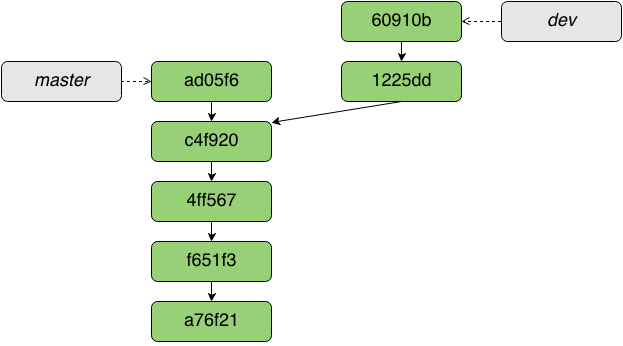

Введення в Git
Олександр Горносталь
Що таке система керування версіями?
Терміни
hash code
branch
commit
diff
merge
snapshot

Чому git?
|
Розподілені
|
Централізовані
|

Переваги розподілених систем
- швидкість операцій
- можна працювати офлайн
- кожен має свого роду бекап проекту
Офлайн можна
- переглядати diff
- робити commit
- переглядати історію комітів
- переключатись між гілками
- створювати та зливати (merge) гілки
- знайти будь-яку попередню версію файла
То чому ж git?
Як встановити?
| Debian based Linux | $ apt-get install git |
| Windows | msysgit.github.com |
| Source code | git-scm.com |
Перші кроки
$ git config --global user.name "Aleksandr Gornostal" $ git config --global user.email "sanya.gornostal@gmail.com"
Створення репозиторію
$ touch hello_world.js$ git init
$ tree -a . ├── .git │ ├── branches │ ├── config │ ├── description │ ├── HEAD│ ├── hooks │ │ ├── applypatch-msg.sample │ │ ├── commit-msg.sample │ │ ├── ... │ │ └── update.sample│ ├── info │ │ └── exclude│ ├── objects │ │ ├── info │ │ └── pack│ └── refs │ ├── heads │ └── tags└── hello_world.js 10 directories, 13 files
$ touch hello_world.js $ git init
$ git add .
$ git commit -m 'initial commit'
$ tree -a . ├── .git │ ├── branches │ ├── COMMIT_EDITMSG │ ├── config │ ├── description │ ├── HEAD ... │ ├── objects│ │ ├── ad │ │ │ └── 9a27de954d7ae76f122db7d0a51556390e9b9d │ │ ├── e6 │ │ │ └── 9de29bb2d1d6434b8b29ae775ad8c2e48c5391 │ │ ├── f6 │ │ │ └── e463f25da129be72316280c247520316850865│ │ ├── info │ │ └── pack │ └── refs │ ├── heads│ │ └── master│ └── tags └── hello_world.js 16 directories, 21 files
Клонування репозиторію
$ git clone git@github.com:jquery/jquery.git
Cloning into 'jquery'... remote: Reusing existing pack: 33399, done. remote: Total 33399 (delta 0), reused 0 (delta 0) Receiving objects: 100% (33399/33399), 19.79 MiB | 1.47 MiB/s, done. Resolving deltas: 100% (23682/23682), done.
Найпростіший спосіб використання
Змінити файли (your editor)
Додати файли в staging area git add (file)
Переглянути зміни git status / git diff
Створити коміт git commit
Ще простіший спосіб
Змінити файли (your editor)
Створити коміт git commit -a
$ git commit
Created commit 77d3001: descriptive commit message
2 files changed, 4 insertions(+), 2 deletions(-)
Rethink Source Control Management
$ vim index.html
$ git commit -am 'changed index.html'
$ gimp web/logo.png
$ git commit -am 'updated logo'
Гілкування та злиття
Гілки (branches) – посилання на хеш коміта
$ cat .git/HEAD ref: refs/heads/master
$ find .git/refs
.git/refs .git/refs/heads.git/refs/heads/master.git/refs/heads/i18n
$ cat .git/refs/heads/master 98ca909dc9e38af91565082bdf93577ff555489e
git checkout
- переміщає вказівник HEAD на іншу гілку
- оновлює робочу директорію
$ git checkout dev

Повернути зміни в файлі
git checkout -- index.html
Взяти файл з іншого коміту
git checkout ac84f5 -- index.html
Створення гілки
$ git branch new-feature master $ git checkout new-feature
$ git checkout -b new-feature master
Злиття (merge)
$ git checkout master $ git merge branch-a
fast-forward merge

non fast-forward merge
- знайти найближчий спільний коміт
- визначити що змінилось
- створити нове дерево коміта
- записати коміт
Конфлікти при злитті
$ git merge branch-a Auto-merging index.htmlCONFLICT (content): Merge conflict in index.htmlAutomatic merge failed; fix conflicts and then commit the result.
$ cat index.html <html> <head> <<<<<<< HEAD<link type="text/css" rel="stylesheet" media="all" href="style.css" />=======<!-- no style -->>>>>>>> branch-a </head> <body> <h1>Hello,World! Life is great!</h1> </body> </html>
Що робити?
Виправити конфлікт вручну / git mergetool
Додати файли в staging area git add (file)
Створити коміт git commit
Remotes
$ git remote add [NAME] [URL]
$ git remote add origin git@github.com:gornostal/talks.git
git push origin master
git fetch
git pull
pull == fetch + merge
Робота в команді
git log
Що є в branch-a чого немає в master?
git log branch-a ^master

Що піде на сервер?
git log branch-b ^origin/branch-b
git log origin/branch-b..branch-b
Подивитись історію файла
git log -p -- filename
Що почитати?
gornostal.github.io/talks/git-intro